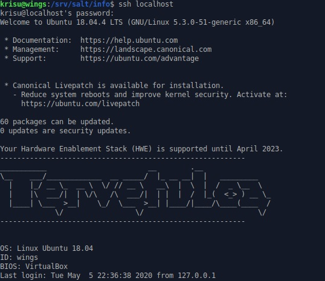

Muotteja ja moduleja
06.05.2020, Kristian KoponenKäytetyt laitteet
Windows 10
| Prosessori: | Intel(R) Core(TM) i5-2500K @ 3.30Ghz |
|---|---|
| Keskusmuisti: | 8GiB DDR3 |
| Näytönohjain: | Nvidia GTX 970 |
| Käyttöjärjestelmä: | Windows 10 64-bit |
VirtualBox 6.1
xubuntu 18.04.4 amd64 ISO
Hello templates!
Hello templates! Tee muotilla esimerkkitiedosto, jossa on muuttujien (esim grains) arvoja.
Käytän tätä tehtävää varten apuna Tero Karvisen Make a Million of Those -artikkelia. Luodaan uusi kansio ja tila.
$ sudo mkdir /srv/salt/info
$ sudoedit /srv/salt/info/init.sls
{% for file in ['info.txt'] %}
/tmp/info/{{ file }}:
file.managed:
- source: salt://info/info.txt
- makedirs: True
- template: jinja
- context:
file: {{ file }}
{% endfor %}Luodaan muotti johon tilassa viitataan.
$ sudoedit /srv/salt/info/info.txt
OS: {{ grains['kernel'] }} {{ grains['os'] }} {{ grains ['osrelease'] }}
ID: {{ grains['id'] }}
BIOS: {{ grains ['biosversion'] }}Ajetaan paikallisesti.
sudo salt-call --local state.apply info --state-output debug
local:
----------
ID: /tmp/info/info.txt
Function: file.managed
Result: True
Comment: File /tmp/info/info.txt updated
Started: 22:19:48.140041
Duration: 31.971 ms
Changes:
----------
diff:
New file
mode:
0644
Summary for local
------------
Succeeded: 1 (changed=1)
Failed: 0
------------
Total states run: 1
Total run time: 31.971 ms
Luetaan äsken luotu info-tiedosto.
$ cat /tmp/info/info.txt
OS: Linux Ubuntu 18.04
ID: wings
BIOS: VirtualBox
Toimii.
Message of the Day
Message of the Day. Sisäänkirjautuessa näytetään päivän viesti. Lisää päivän viestiin tietoa ympäristöstä käyttäen muotteja. Sopiva tiedosto on /etc/motd.
Muokataan aiemmin luotua templatea, ja lisätään siihen asiaankuuluva tervehdys. ASCII generator
$ sudoedit /srv/salt/info/info.txt
----------------------------------------------------------
___________ __ .__
\__ ___/_____________ __ _____/ |_ __ __| | _________
| |_/ __ \_ __ \ \/ // __ \ __\ | \ | / _ \__ \
| |\ ___/| | \/\ /\ ___/| | | | / |_( <_> ) __ \_
|____| \___ >__| \_/ \___ >__| |____/|____/\____(____ /
\/ \/ \/
----------------------------------------------------------
OS: {{ grains['kernel'] }} {{ grains['os'] }} {{ grains ['osrelease'] }}
ID: {{ grains['id'] }}
BIOS: {{ grains ['biosversion'] }}
Muokataan myös tilaa, jotta se ajaa viestin MOTD-tiedoston tilalle.
{% for file in ['motd'] %}
/etc/{{ file }}:
file.managed:
- source: salt://info/info.txt
- makedirs: True
- template: jinja
- context:
file: {{ file }}
{% endfor %}Ajetaan tila.
$ sudo salt 'wings' state.apply info
wings:
----------
ID: /etc/motd
Function: file.managed
Result: True
Comment: File /etc/motd updated
Started: 22:45:25.539088
Duration: 40.67 ms
Changes:
----------
diff:
---
+++
@@ -1,4 +1,12 @@
+----------------------------------------------------------
+___________ __ .__
+\__ ___/_____________ __ _____/ |_ __ __| | _________
+ | |_/ __ \_ __ \ \/ // __ \ __\ | \ | / _ \__ \
+ | |\ ___/| | \/\ /\ ___/| | | | / |_( <_> ) __ \_
+ |____| \___ >__| \_/ \___ >__| |____/|____/\____(____ /
+ \/ \/ \/
+----------------------------------------------------------
+
OS: Linux Ubuntu 18.04
ID: wings
Summary for wings
------------
Succeeded: 1 (changed=1)
Failed: 0
------------
Total states run: 1
Total run time: 40.670 ms
Asennetaan SSH (saltilla) ja kirjaudutaan sen kautta sisään, että nähdään viesti.
$ sudo salt 'wings' pkg.install ssh
$ ssh localhost
SSH olikin jo asennettu aiemmin. Uusi viesti näkyy kirjautumisen yhteydessä. Näkyy toimineen.
Bash
Bash. Tee bashiin asetuksia Saltilla. Ensin käsin, vasta toimivaa automatisoidaan. Muista testata lopputulos käyttäjän näkökulmasta.
Muokataan ensin Bashia manuaalisesti. How to customize and colorize your bash prompt -artikkeli auttaa. Otetaan ensin nykyinen tilanne talteen defaultiksi DEFAULT-komennolla.
$ DEFAULT=$PS1
$ PS1="\[\033[1;36m\]\u@\h\[\033[0;37m\]:\[\033[1;34m\]\w\[\033[0;37m\]\$ "Artikkelista jo selvisi missä tiedostossa asetukset ovat. Luodaan uusi salt tilakansio ja haetaan tiedosto sinne.
$ sudo mkdir /srv/salt/bashrc
$ sudo cp /home/krisu/.bashrc /srv/salt/bashrc/.bashrc
$ sudoedit /srv/salt/bashrc/init.sls
$ cat /srv/salt/bashrc/init.sls
/home/krisu/.bashrc:
file.managed:
- source: salt://bashrc/.bashrc
- user: krisu
- group: krisu
- mode: 644
Muokataan .bashrc tiedostoa saltin kansioissa.
$ sudoedit /srv/salt/bashrc/.bashrc
...
if [ "$color_prompt" = yes ]; then
PS1='${debian_chroot:+($debian_chroot)}\[\033[1;36m\]\u@\h\[\033[0;37m\]:\[\033[1;34m\]\w\[\033[0;37m\]\$ '
else
PS1='${debian_chroot:+($debian_chroot)}\u@\h:\w\$ '
fi
unset color_prompt force_color_prompt
...Avataan terminaali uudestaan, jotta nähdään alkuperäinen. Ajetaan tila läpi. Avataan sitten taas terminaali että nähdään muutos.
$ sudo salt 'wings' state.apply bashrcMuutos toimi.
Nginx
Nginx. Tee nginx-weppipalvelimeen asetuksia Saltilla. Voit esimerkiksi tehdä uuden site:n, niin että etusivu vaihtuu. Kun nginx on todennäköisesti sinulle uusi palvelin, tässä tehtävässä on siis ensin laaja osuus valita sopiva asetus nginx:lle ja saada se toimimaan käsin. Vasta toimivaa, käsin kokeiltua kannattaa automatisoida. Muista lopputuloksen testaus käyttäjän näkökulmasta.
Asennus ja konfigurointi manuaalisesti
Asennetaan Nginx
$ sudo apt-get install nginx -yTestataan että oletussivu näkyy.
$ curl localhostMuokataan oletussivun sisältöä.
$ echo ”jei”|sudo tee /var/www/html/index.nginx-debian.html
”jei”
$ curl localhost
”jei”
Käydään katsomassa Nginx-konfiguraatioita. Default-tiedostossa on ohjeita palvelimen konfigurointiin. Näyttää toimivan suht. samalla tavalla kuin Apache2.
$ less /etc/nginx/sites-available/defaultLuodaan omaan kotihakemistoon uusi kansio ja html-sivu.
$ cd
$ mkdir -p Sites/testi.example.com
$ nano Sites/testi.example.com/index.html
$ cat Sites/testi.example.com/index.html
Hello, Nginx!Luodaan Nginx konfiguraatio-kansioon uusi Virtual Host tiedosto. Lueskelen lisää ohjeita täältä.
$ sudoedit /etc/nginx/sites-available/testi.example.com
$ cat /etc/nginx/sites-available/testi.example.com
server {
listen 80 default_server;
listen [::]:80 default_server;
root /home/krisu/Sites/testi.example.com;
index index.html
server_name testi.example.com;
location / {
try_files $uri $uri/ =404;
}
}Luodaan symbolinen linkki sites-enabled kansioon ja tarkistetaan syntaksi-virheiden varalta.
$ sudo ln -s /etc/nginx/sites-available/testi.example.com /etc/nginx/sites-enabled/
$ sudo nginx -t
nginx: [emerg] a duplicate default server for 0.0.0.0:80 in /etc/nginx/sites-enabled/testi.example.com:2
nginx: configuration file /etc/nginx/nginx.conf test failedOletettavasti on poistettava default-tiedosto sites-enabled kansiosta.
$ sudo rm /etc/nginx/sites-enabled/default
$ sudo nginx -t
nginx: the configuration file /etc/nginx/nginx.conf syntax is ok
nginx: configuration file /etc/nginx/nginx.conf test is successfulNyt konfiguraatiot näyttävät olevan ok. Käynnistetään Nginx uudestaan ja testataan.
$ sudo systemctl restart nginx
$ curl localhost
Hello, Nginx!Näyttää toimivan.
Asennus ja konfigurointi SaltStackilla
Luodaan tila joka luo kotihakemistoon kansion ja sivun.
$ sudo mkdir /srv/salt/testiexamplecom
$ sudo cp /home/krisu/Sites/testi.example.com/index.html /srv/salt/testiexamplecom/
$ sudoedit /srv/salt/testiexamplecom/init.sls
{% for file in ['index.html'] %}
/home/krisu/Sites/testi.example.com/{{ file }}:
file.managed:
- source: salt://testiexamplecom/index.html
- makedirs: True
- user: krisu
- group: krisu
- mode: 664
- template: jinja
- context:
file: {{ file }}
{% endfor %}
Luodaan tila joka asentaa ja konfiguroi Nginxin.
$ sudo mkdir /srv/salt/nginx
$ sudo cp /etc/nginx/sites-available/testi.example.com /srv/salt/nginx/
$ sudoedit /srv/salt/nginx/init.sls
#Asenna nginx
nginx:
pkg.installed
#Lisää testi.example.com konfiguraatiot
/etc/nginx/sites-available/testi.example.com:
file.managed:
- source: salt://nginx/testi.example.com
/etc/nginx/sites-enabled/testi.example.com:
file.managed:
- source: salt://nginx/testi.example.com
#Poista oletuskonfiguraatio
/etc/nginx/sites-enabled/default:
file.absent
#Käynnistä uudelleen
nginx2service:
service.running:
- name: nginx
- watch:
- file: /etc/nginx/sites-enabled/default
- file: /etc/nginx/sites-enabled/testi.example.comMuokataan top.sls tiedosto ja ajetaan tila
$ sudoedit /srv/salt/top.sls
$ cat /srv/salt/top.sls
base:
'*':
- testiexamplecom
- nginx
$ sudo salt 'wings' stat
...
Summary for wings
------------
Succeeded: 6
Failed: 0
------------
Total states run: 6
Total run time: 1.857 sLopputestaus
Lisätään aiempien tehtävien tilat myös top.sls tiedostoon ja ajetaan kaikki tämän päivän harjoitukset puhtaalle minionille.
$ sudoedit /srv/salt/top.sls
$ cat /srv/salt/top.sls
base:
'*':
- info
- bashrc
- testiexamplecom
- nginx
$ sudo salt 'feather1' state.apply
...
Summary for feather1
------------
Succeeded: 8 (changed=8)
Failed: 0
------------
Total states run: 8
Total run time: 20.438 s
Kuvankaappauksesta nähdään että Bash-komentorivin väri on kuten aiemmin asetettu, SSH:lla kirjautuessa nähdään viesti, ja localhostissa komeilee käyttäjän kotihakemistossa sijaitseva index.html.
Johtopäätös
Kaikki toimii.
Lähteet ja materiaalit
http://terokarvinen.com/2020/configuration-managment-systems-palvelinten-hallinta-ict4tn022-spring-2020/
http://terokarvinen.com/2018/make-a-million-of-those-jinja-templating-salt-states
http://www.network-science.de/ascii/
https://www.howtogeek.com/307701/how-to-customize-and-colorize-your-bash-prompt/
https://www.digitalocean.com/community/tutorials/how-to-set-up-nginx-server-blocks-virtual-hosts-on-ubuntu-16-04